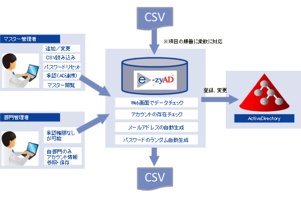
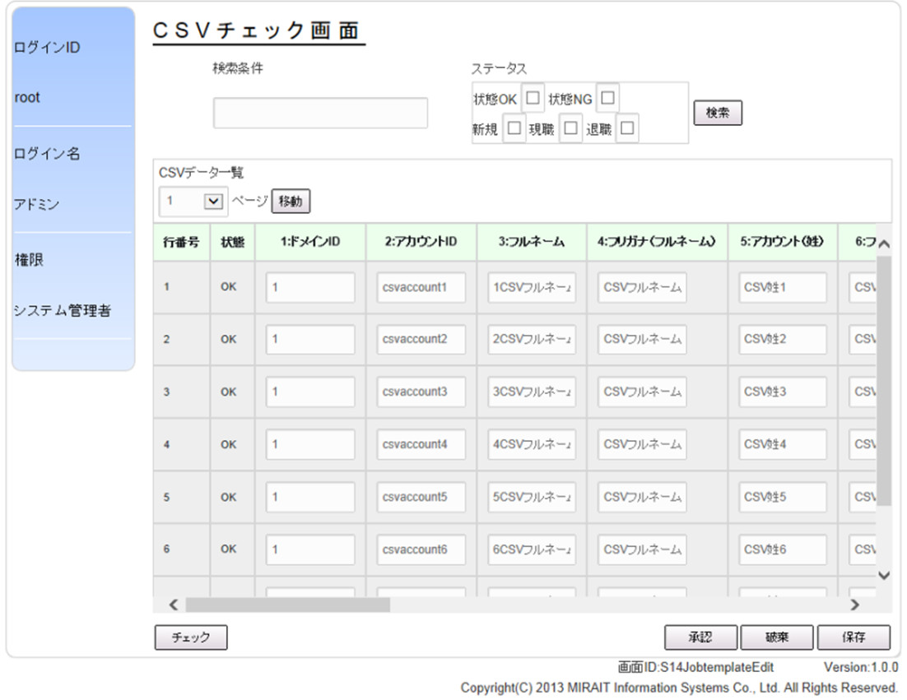
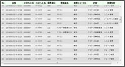
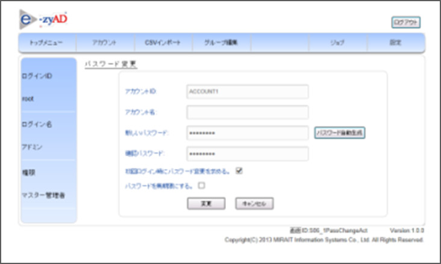
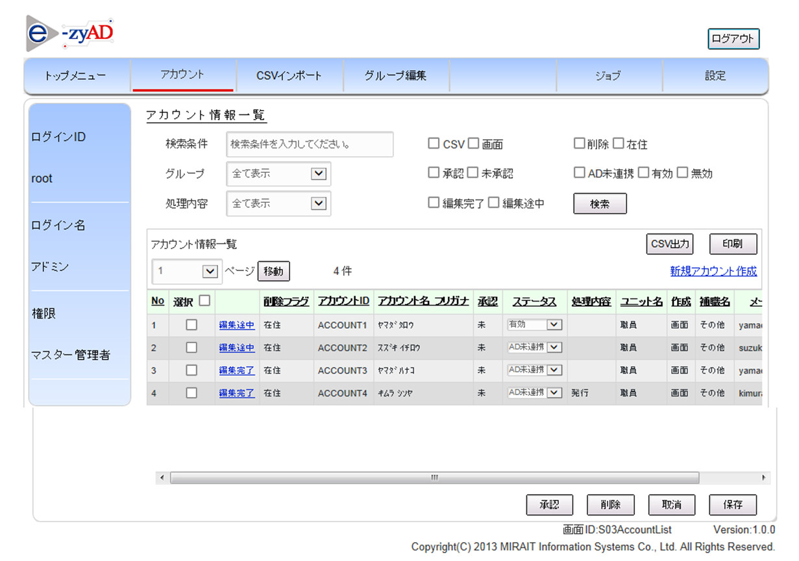
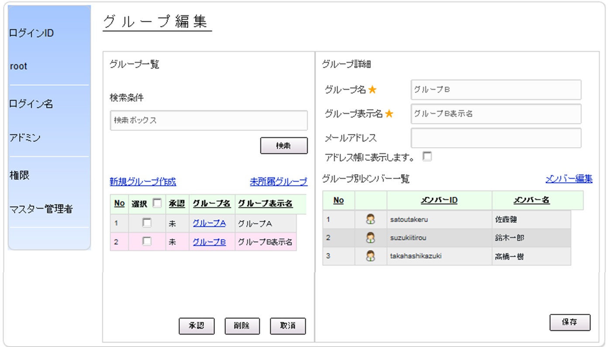
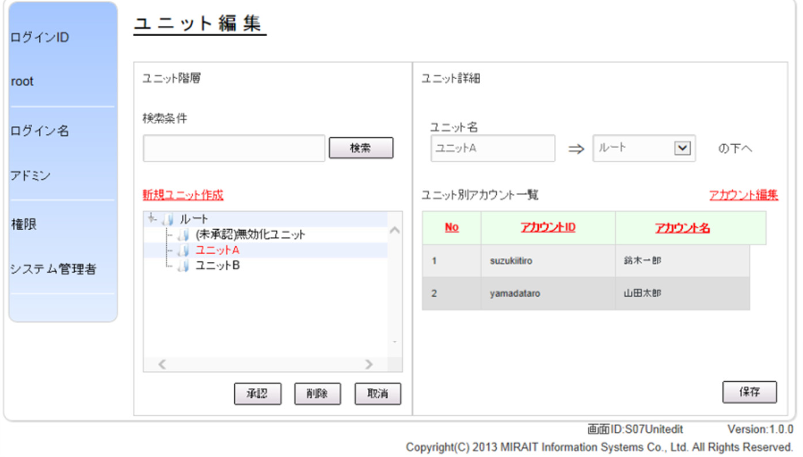

煩雑な管理不要！
e-zyADを利用すれば簡単にActiveDirectoryのユーザ管理が行えます。
- Web画面で手軽にActiveDirectoryのユーザ管理ができる
- 管理者権限を2段階に分けて設定できる
- CSV読み込みも簡単！アカウント・グループ・OUを一括登録
- 他製品とのユーザ連携（Office365）

主な機能
1.CSV登録 － CSVファイルでマスターデータをインポート －
CSVデータの読み込み

アカウント／グループ／OU
データのチェック機能
画面上で読み込んだCSVデータのチェック・修正ができます。
・アカウントの存在チェック
・グループの存在チェック
・OUの存在チェック
・項目の必須チェック
自動付加機能
- パスワード
文字数、文字制限一定の規則に基づきパスワードを自動生成し付加します。 - メールアドレス
一定の規則に基づきメールアドレスを自動生成します。
姓+.+名+（重複する場合は番号） @miraitsystems.jp 等
2.アカウント情報出力 － CSVでもプリンターでも出力できる －
CSV出力
出力する項目・順番は、カスタマイズにより柔軟に対応可能です。
プリンター出力
所定のフォーマットで出力します
出力内容：メールアドレス、アカウント名、初期パスワード
3.アカウント変更履歴管理機能 － アカウントに対する操作履歴を記録－
記録内容

新規登録、パスワード変更、グループ変更、退職処理等
※アカウント単位に履歴出力も可能
4.パスワードリセット
パスワード忘れ対応の処理も簡単

ユーザがパスワードを忘れた場合、管理者はWebよりパスワードのリセットを行い仮パスワードをセットすることができます。管理者はユーザに仮パスワードを伝え、ユーザが次回、Windowsへのログイン時に仮パスワードを入力しパスワードの再設定を行います。
5.2段階の管理者権限 － ２段階の管理者権限の設定が行えます。 －
マスター管理者
すべての機能を利用することが可能です。
部門管理者
部門管理者はWebを利用して自部門のユーザ情報の管理を行います。自部門のユーザの追加／変更／削除 の承認を行います。
オプション
- RADIUS （提供予定）
- RADIUSサーバを実装することにより、VPNや無線LANのアカウント情報を一元的に管理することができます。また、LR-AKEの持つワンタイムパスワード機能と連携することにより、よりセキュアなユーザ認証を行う事が可能になります。
- 他システムとのアカウント連携
- ActiveDirectoryだけではなく、CSV出力機能を用いて他のシステムともアカウント連携を行う事ができます。
直感的に操作できるWebインターフェース
クライアント側で必要なのはWebブラウザのみ。使いなれた操作感で使用できるので、誰でも直感的使えて使いやすいのが特徴です。
アカウント一覧

グループ編集

ユニット編集

システム要件
| e-zyADサーバ | CPU：メモリ４G以上 ディスク300G以上 OS：CentOS 5.7以上 データベース：PostgreSQL |
|---|---|
| 管理端末 | ブラウザ（IE9、10）を搭載した端末 |
| 連携可能サーバ | Windows Server 2008R2/2012 Active Directory |
- Windows は米国 Microsoft Corporation の米国およびその他の国における登録商標です。
- Active Directoryは米国Microsoft Corporationの米国およびその他の国における登録商標または商標です。
- CentOSの名称およびそのロゴは、CentOS ltdの商標または登録商標または商標です。
- PostgreSQLは、PostgreSQLの米国およびその他の国における商標です。
e-zyADに関するお問い合わせ
担当者が対応します。お気軽にお問い合わせください。
 電話でのお問い合わせ 電話でのお問い合わせ |
 フォームからのお問い合わせ フォームからのお問い合わせ |
本社： 大阪オフィス： |